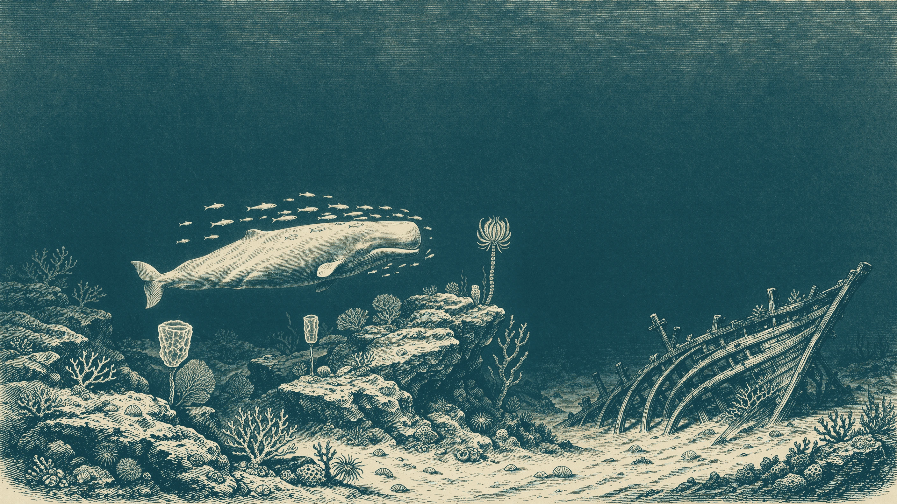

<!doctype html>
<html lang="en">
<head>
<meta charset="utf-8">
<meta name="viewport" content="width=device-width, initial-scale=1">
<title>Leadline Footer Motion</title>
<link rel="preconnect" href="https://fonts.googleapis.com">
<link rel="preconnect" href="https://fonts.gstatic.com" crossorigin>
<link href="https://fonts.googleapis.com/css2?family=IM+Fell+DW+Pica&display=swap" rel="stylesheet">
<style>
/* Leadline: seabed charts. A footer is the bottom of the page, so this one is the actual bottom.
   The lead line is a true scale: surface at the top edge of the engraving, 3,812 m where the weight lands, the whale at about 2,250 m.
   In motion everything in the water moves with one slow current from right to left. The line and its marks hold still: they are the instrument. */
:root {
  --water: #184953;
  --primary: #f7eed5;
  --secondary: #ebe4cd;
  --muted: #d3d4c0;
  --ease: cubic-bezier(.22, 1, .36, 1);
  --h: clamp(72px, 9.6vw, 192px);
}
* { box-sizing: border-box; }
html, body { margin: 0; background: var(--water); }
body { font: 400 18px/1.4 "IM Fell DW Pica", serif; color: var(--primary); -webkit-font-smoothing: antialiased; }
a { color: inherit; text-decoration: none; transition: color 150ms var(--ease); }
a:hover { color: #fff; text-decoration: underline; text-underline-offset: 4px; text-decoration-thickness: 1px; }
a:focus-visible { outline: 2px solid var(--primary); outline-offset: 4px; border-radius: 2px; }
h2, p, ul { margin: 0; padding: 0; }
ul { list-style: none; }

/* the engraving is 16:9 and sits on the floor; here the footer is 16:10 and the water above it is the print's own top edge, mirrored */
.foot {
  position: relative; overflow: hidden; min-height: 62.5vw;
  padding: 48px 64px calc(35vw + 16px);
}
.scene { position: absolute; left: 0; bottom: 0; width: 100%; aspect-ratio: 16 / 9; }
.scene img { width: 100%; height: 100%; display: block; user-select: none; }
.scene canvas { position: absolute; left: 0; bottom: 0; width: 100%; aspect-ratio: 16 / 10; display: block; }
/* the hatching near the surface is the busiest part of the print, so it steps back behind the small text */
.scene::after { content: ""; position: absolute; left: 0; right: 0; bottom: 0; top: -11.1111%; background: linear-gradient(to bottom, rgba(24,73,83,.82) 0%, rgba(24,73,83,.82) 10%, rgba(24,73,83,.7) 31.6%, rgba(24,73,83,0) 49.6%); pointer-events: none; }
.line, .tick, .weight { z-index: 1; }
.head, .side { position: relative; }
.side { position: absolute; top: 52px; left: 71%; right: 64px; }

.mark-row { display: flex; align-items: baseline; gap: 16px; }
.mark { font-size: 24px; }
.mark-row p { color: var(--secondary); }
h2 { font-weight: 400; font-size: var(--h); line-height: 1; letter-spacing: -.015em; margin-top: 24px; }
.head > p { margin-top: 12px; font-size: 21px; color: var(--secondary); text-wrap: balance; }
/* the text is drawn again in one canvas that moves with the water: the headline bends, the rest only drifts.
   The real text stays in place, invisible, for reading, selecting and clicking; a link under the pointer or in focus shows itself */
.ink { position: absolute; left: 0; top: 0; width: 100%; height: 100%; z-index: 2; pointer-events: none; }
.live .head, .live .head *, .live .side, .live .side * { color: transparent !important; }
.live a:hover, .live a:hover *, .live a:focus-visible, .live a:focus-visible * { color: #fff !important; }
.live a, .measure * { transition: none !important; }  /* the copy in the canvas steps aside at once, so the page's link appears at once */

nav { display: flex; justify-content: space-between; gap: 32px; }
nav b { display: block; font-weight: 400; margin-bottom: 16px; }
nav li + li { margin-top: 8px; }
nav a { color: var(--secondary); }
.depth { display: flex; justify-content: space-between; gap: 32px; }
.depth span:last-child { color: var(--muted); }
.depth:hover span:last-child { color: inherit; }

.legal { margin-top: 32px; font-size: 16px; color: var(--muted); }

/* the lead line, placed in the picture's own coordinates */
.line { position: absolute; left: 61.5%; top: -2000px; bottom: 11.6%; width: 1.5px; background: var(--primary); }
.tick { position: absolute; left: 61.5%; display: flex; align-items: center; gap: 8px; margin-left: -6px; transform: translateY(-50%); font-size: 16px; color: var(--secondary); }
.tick::before { content: ""; width: 14px; height: 1.5px; background: var(--primary); }
.weight { position: absolute; left: 61.5%; top: 88.4%; width: 20px; height: 48px; margin-left: -9.25px; transform: translateY(-100%); display: block; } /* the tip marks the depth */

/* narrower: the text comes first, and the picture melts up into the water colour */
@media (max-width: 1160px) {
  .foot { min-height: 56.25vw; padding: 48px 40px calc(40vw + 16px); }
  .side { position: relative; top: 0; left: 0; right: 0; margin-top: 40px; }
  nav { justify-content: flex-start; gap: 64px; }
  nav > div:first-child { flex: 0 0 280px !important; }
  .scene img, .scene canvas { -webkit-mask-image: linear-gradient(to bottom, transparent, #000 30%); mask-image: linear-gradient(to bottom, transparent, #000 30%); }
  .scene::after { display: none; }
  .tick.first { display: none; }
}

/* phone: the picture crops to the whale and the line, and rows grow to touch height */
@media (max-width: 720px) {
  .foot { padding: 40px 24px calc(84vw + 16px); }
  .mark-row { display: block; }
  .mark-row p { margin-top: 4px; }
  h2 { margin-top: 24px; }
  .head > p { font-size: 18px; }
  nav { display: grid; grid-template-columns: 1fr; gap: 24px; }
  nav > div:first-child { flex: none !important; }
  nav b { margin-bottom: 4px; }
  nav li + li { margin-top: 0; }
  nav li a { display: flex; align-items: center; min-height: 40px; }
  .scene { width: 190vw; left: -27vw; }
  /* here the line starts in the picture and keeps only its ticks: labels would land on the coral or the screen edge */
  .line { top: 16%; }
  .tick { font-size: 0; gap: 0; }
}
</style>
</head>
<body>

<footer class="foot">
  <div class="scene">
    
    <canvas class="live" width="2880" height="1800" aria-hidden="true"></canvas>
    <div class="line"></div>
    <div class="tick first" style="top:23.2%">1,000 m</div>
    <div class="tick" style="top:46.4%">2,000 m</div>
    <div class="tick" style="top:69.6%">3,000 m</div>
    <svg class="weight" viewBox="0 0 20 48" aria-hidden="true"><path d="M6.500 0h7l5 42c.4 3.500-3.200 5.500-8.500 5.500s-8.900-2-8.500-5.500z" fill="#f7eed5" stroke="#184953" stroke-width="1.500"/></svg>
  </div>

  <div class="head">
    <div class="mark-row"><a class="mark" href="#">Leadline</a><p>Seabed charts for cable and wind farm crews</p></div>
    <h2>3,812 m</h2>
    <p>The bottom of the Norwegian Sea, and of this page.</p>
  </div>

  <div class="side">
    <nav aria-label="Footer">
      <div style="flex:1 1 auto"><b>Latest soundings</b><ul>
        <li><a class="depth" href="#"><span>Barents Sea</span><span>412 m</span></a></li>
        <li><a class="depth" href="#"><span>Skagerrak</span><span>688 m</span></a></li>
        <li><a class="depth" href="#"><span>Norwegian Sea</span><span>3,812 m</span></a></li>
        <li><a href="#">All charts</a></li>
      </ul></div>
      <div style="flex:0 0 auto"><b>Leadline</b><ul>
        <li><a href="#">Cable routes</a></li>
        <li><a href="#">Wreck register</a></li>
        <li><a href="#">Our ships</a></li>
        <li><a href="#">Contact</a></li>
      </ul></div>
    </nav>
    <div class="legal">© 2026 Leadline Survey AS, Bergen</div>
  </div>
  <canvas class="ink" aria-hidden="true"></canvas>
</footer>


<script type="module">
/* The engraving is taken apart into layers (img/leadline-motion) and put back together on every frame.
   Everything is a pure function of time and repeats every 16 s, so the loop has no seam.
   One current runs through the whole scene from right to left: the whale and the school hold their place against it,
   whatever grows from the floor leans with it and comes back, the marine snow drifts with it. Nothing glows, nothing is lit from above. */
const T = 16, START = 0;
const TAU = Math.PI * 2;
const W = 4096, H = 2304, EXT = 256;          // the canvas also covers 256 px of mirrored water above the print
const params = new URLSearchParams(location.search);
const K = params.has('rest') ? 0 : 1;         // ?rest puts every layer back where the engraver drew it
const foot = document.querySelector('.foot');
const canvas = document.querySelector('canvas.live');
const gl = canvas.getContext('webgl2', { alpha: false, antialias: false, preserveDrawingBuffer: params.has('film') });
if (!gl) throw new Error('no webgl2');
const base = 'img/leadline-motion/';
const meta = await fetch(base + 'meta.json').then(r => r.json());
const rnd = (k, s) => { const v = Math.sin(k * 12.9898 + s * 78.233) * 43758.5453; return v - Math.floor(v); };
const clamp = (x, a, b) => Math.min(b, Math.max(a, x));

// the current, in units of its own strength; every period divides the loop
const cur = a => .62 * Math.sin(TAU * a / 8) + .30 * Math.sin(TAU * a / 16 + 1.3) + .16 * Math.sin(TAU * a / (16 / 3) + .4);
const curInt = a => -.62 * 8 / TAU * Math.cos(TAU * a / 8) - .30 * 16 / TAU * Math.cos(TAU * a / 16 + 1.3) - .16 * (16 / 3) / TAU * Math.cos(TAU * a / (16 / 3) + .4);
const GUST = 700;                             // px per second: a gust reaches the reef a few seconds after the wreck

const compile = (vs, fs, g = gl) => {
  const p = g.createProgram();
  for (const [type, src] of [[g.VERTEX_SHADER, vs], [g.FRAGMENT_SHADER, fs]]) {
    const s = g.createShader(type); g.shaderSource(s, src); g.compileShader(s);
    if (!g.getShaderParameter(s, g.COMPILE_STATUS)) throw new Error(g.getShaderInfoLog(s));
    g.attachShader(p, s);
  }
  g.linkProgram(p);
  if (!g.getProgramParameter(p, g.LINK_STATUS)) throw new Error(g.getProgramInfoLog(p));
  const u = {}; const n = g.getProgramParameter(p, g.ACTIVE_UNIFORMS);
  for (let i = 0; i < n; i++) { const name = g.getActiveUniform(p, i).name; u[name] = g.getUniformLocation(p, name); }
  return { p, u };
};

const plateProg = compile(`#version 300 es
out vec2 uv; void main(){ vec2 q=vec2((gl_VertexID<<1)&2,gl_VertexID&2); uv=q; gl_Position=vec4(q.x*2.-1.,1.-q.y*2.,0,1); }`,
`#version 300 es
precision highp float; in vec2 uv; out vec4 o;
uniform sampler2D plate, sway; uniform float t, k; uniform vec2 px;
const float TAU=6.2831853, W=4096., H=2304., EXT=256., AMAX=${meta.amax.toFixed(1)}, GUST=${GUST}.;
float cur(float a){ return .62*sin(TAU*a/8.)+.30*sin(TAU*a/16.+1.3)+.16*sin(TAU*a/(16./3.)+.4); }
float hash(vec2 q){ return fract(sin(dot(q,vec2(12.9898,78.233)))*43758.5453); }
float vnoise(vec2 q){ vec2 i=floor(q),f=fract(q); f=f*f*(3.-2.*f);
  return mix(mix(hash(i),hash(i+vec2(1,0)),f.x),mix(hash(i+vec2(0,1)),hash(i+vec2(1,1)),f.x),f.y); }
vec3 tap(vec2 P){ P.y=abs(P.y); return textureLod(plate,P/vec2(W,H),0.).rgb; }
void main(){
  vec2 P=vec2(uv.x*W,uv.y*(H+EXT)-EXT);
  vec2 Pm=vec2(P.x,abs(P.y));
  vec4 s=texture(sway,Pm/vec2(W,H));
  vec2 d=vec2(0);
  // leans from the base, the tip a little behind the stem, each thing a little out of step with its neighbour
  float w=s.r*AMAX*k*1.4;
  if(w>.01){
    float c=cur(t-(W-P.x)/GUST-s.b*1.3+s.g*.8);
    d=vec2(w*c,.004*w*w*c*c);
  }
  // fine arms and tentacles also stir on their own
  if(s.a>.01){
    float n1=vnoise(Pm/26.), n2=vnoise(Pm/31.+7.);
    d+=s.a*k*2.*vec2(sin(TAU*(t/2.+n1*2.)),.6*sin(TAU*(t/(16./6.)+n2*2.)));
  }
  vec2 Q=P-d;
  vec3 col=(tap(Q+vec2(-.25,-.25)*px)+tap(Q+vec2(.25,-.25)*px)+tap(Q+vec2(-.25,.25)*px)+tap(Q+vec2(.25,.25)*px))*.25;
  o=vec4(col,1.);
}`);

const spriteProg = compile(`#version 300 es
in vec2 pos; in vec2 tc; in vec4 rect; in float al;
out vec2 v; out vec4 r; out float a;
void main(){ v=tc; r=rect; a=al; gl_Position=vec4(pos.x/4096.*2.-1.,1.-(pos.y+256.)/2560.*2.,0,1); }`,
`#version 300 es
precision highp float; in vec2 v; in vec4 r; in float a; out vec4 o;
uniform sampler2D tex; uniform vec2 tsize; uniform float mode; uniform vec3 bone;
vec4 tap(vec2 q){ q=clamp(q,r.xy+.5,r.zw-.5); vec4 c=textureLod(tex,q/tsize,0.);
  return vec4(c.rgb*c.a,c.a); }
void main(){
  vec2 dx=dFdx(v), dy=dFdy(v);
  vec4 c=(tap(v-.25*dx-.25*dy)+tap(v+.25*dx-.25*dy)+tap(v-.25*dx+.25*dy)+tap(v+.25*dx+.25*dy))*.25;
  if(mode>.5){ o=vec4(bone,1.)*c.a*a; return; }
  o=c*a;
}`);

const loadTex = async (name, unit) => {
  const img = new Image(); img.src = base + name; await img.decode();
  const tex = gl.createTexture(); gl.activeTexture(gl.TEXTURE0 + unit); gl.bindTexture(gl.TEXTURE_2D, tex);
  gl.pixelStorei(gl.UNPACK_PREMULTIPLY_ALPHA_WEBGL, false);
  gl.pixelStorei(gl.UNPACK_COLORSPACE_CONVERSION_WEBGL, gl.NONE);
  gl.texImage2D(gl.TEXTURE_2D, 0, gl.RGBA, gl.RGBA, gl.UNSIGNED_BYTE, img);
  gl.texParameteri(gl.TEXTURE_2D, gl.TEXTURE_MIN_FILTER, gl.LINEAR);
  gl.texParameteri(gl.TEXTURE_2D, gl.TEXTURE_MAG_FILTER, gl.LINEAR);
  gl.texParameteri(gl.TEXTURE_2D, gl.TEXTURE_WRAP_S, gl.CLAMP_TO_EDGE);
  gl.texParameteri(gl.TEXTURE_2D, gl.TEXTURE_WRAP_T, gl.CLAMP_TO_EDGE);
  return [img.width, img.height];
};
const [, , [whW, whH], [finW, finH], [fishW, fishH], [flW, flH]] = await Promise.all([
  loadTex('plate.webp', 0), loadTex('sway.png', 1), loadTex('whale.png', 2), loadTex('fins.png', 3), loadTex('fish.png', 4), loadTex('flecks.png', 5),
]);

gl.useProgram(plateProg.p);
gl.uniform1i(plateProg.u.plate, 0); gl.uniform1i(plateProg.u.sway, 1);
gl.useProgram(spriteProg.p);
gl.uniform3f(spriteProg.u.bone, .95, .91, .79);

const emptyVao = gl.createVertexArray();
const vao = gl.createVertexArray(); const vbo = gl.createBuffer();
gl.bindVertexArray(vao); gl.bindBuffer(gl.ARRAY_BUFFER, vbo);
const STRIDE = 9 * 4;
for (const [name, size, off] of [['pos', 2, 0], ['tc', 2, 8], ['rect', 4, 16], ['al', 1, 32]]) {
  const loc = gl.getAttribLocation(spriteProg.p, name);
  gl.enableVertexAttribArray(loc); gl.vertexAttribPointer(loc, size, gl.FLOAT, false, STRIDE, off);
}
const quad = (arr, P, Tc, rect, al) => { // corners tl tr br bl
  for (const i of [0, 1, 2, 0, 2, 3]) arr.push(P[i][0], P[i][1], Tc[i][0], Tc[i][1], rect[0], rect[1], rect[2], rect[3], al);
};

/* ---------- the whale
   A sperm whale swims by bending up and down: a wave runs from the middle of the back to the flukes, small at first and growing,
   with a stroke every 4 s. The flukes tilt ahead of their rise and fall, the head answers with a slight pitch, the fins trim. */
const WB = meta.whaleBox, FB = meta.finBox;
const O = [1922, 1080];                                   // tip of the snout
const UL = Math.hypot(740 - 1922, 1265 - 1080);
const U = [(740 - 1922) / UL, (1265 - 1080) / UL];       // along the body, toward the flukes
const N = [-U[1], U[0]];                                  // across it, toward the back
const BL = 1345, STROKE = 4, AMP = 52, LAMBDA = 1.15, PH = TAU / LAMBDA;
const envW = q => .04 + .96 * Math.pow(Math.max(0, (q - .38) / .62), 2);
const hAt = (s, t) => { const q = clamp(s / BL, 0, 1.03); return K * AMP * envW(q) * Math.sin(TAU * (t / STROKE - q / LAMBDA) + PH); };
const pose = t => ({
  heave: K * (8 * Math.sin(TAU * t / 16 + .8)),
  surge: K * 2 * Math.sin(TAU * t / 2 + .5),
  pitch: K * (.5 * Math.sin(TAU * t / STROKE + PH - 2.2) + .35 * Math.sin(TAU * t / 16 + 2.4)) * Math.PI / 180,
});
const body = P => [(P[0] - O[0]) * U[0] + (P[1] - O[1]) * U[1], (P[0] - O[0]) * N[0] + (P[1] - O[1]) * N[1]];
const rest = (s, v) => [O[0] + s * U[0] + v * N[0], O[1] + s * U[1] + v * N[1]];
const PC = rest(640, 0);                                  // the body pitches about its middle
const A0 = Math.atan2(U[1], U[0]);
const whaleAt = (s, v, t, g) => {
  const h = hAt(s, t), hp = (hAt(s + 2, t) - hAt(s - 2, t)) / 4, k = 1 / Math.hypot(1, hp);
  const nx = (N[0] - hp * U[0]) * k, ny = (N[1] - hp * U[1]) * k;
  const x = O[0] + (s + g.surge) * U[0] + (h + g.heave) * N[0] + v * nx;
  const y = O[1] + (s + g.surge) * U[1] + (h + g.heave) * N[1] + v * ny;
  const c = Math.cos(g.pitch), sn = Math.sin(g.pitch), dx = x - PC[0], dy = y - PC[1];
  const turn = Math.atan2(U[1] + hp * N[1], U[0] + hp * N[0]) - A0 + g.pitch;
  return [PC[0] + dx * c - dy * sn, PC[1] + dx * sn + dy * c, turn];
};
const NS = 112, NV = 16, S0 = -30, S1 = 1365, V0 = -180, V1 = 205;
const whaleMesh = (t, g) => {
  const grid = [];
  for (let i = 0; i <= NS; i++) for (let j = 0; j <= NV; j++) {
    const s = S0 + (S1 - S0) * i / NS, v = V0 + (V1 - V0) * j / NV;
    const r = rest(s, v), p = whaleAt(s, v, t, g);
    grid.push([p[0], p[1], r[0] - WB[0], r[1] - WB[1]]);
  }
  const arr = [], R = [0, 0, whW, whH], at = (i, j) => grid[i * (NV + 1) + j];
  for (let i = 0; i < NS; i++) for (let j = 0; j < NV; j++) {
    const q = [at(i, j), at(i + 1, j), at(i + 1, j + 1), at(i, j + 1)];
    quad(arr, q.map(e => [e[0], e[1]]), q.map(e => [e[2], e[3]]), R, 1);
  }
  return arr;
};
const finQuad = (arr, pivot, row, t, g, deg) => {
  const [s, v] = body(pivot), p = whaleAt(s, v, t, g), a = p[2] + deg * Math.PI / 180;
  const c = Math.cos(a), sn = Math.sin(a), hgt = FB[3] - FB[1];
  const corners = [[FB[0], FB[1]], [FB[2], FB[1]], [FB[2], FB[3]], [FB[0], FB[3]]];
  const P = corners.map(([x, y]) => { const dx = x - pivot[0], dy = y - pivot[1]; return [p[0] + dx * c - dy * sn, p[1] + dx * sn + dy * c]; });
  const y0 = row * hgt;
  quad(arr, P, [[0, y0], [FB[2] - FB[0], y0], [FB[2] - FB[0], y0 + hgt], [0, y0 + hgt]], [0, y0, finW, y0 + hgt], 1);
};

/* ---------- the school
   Fish beat their tails side to side. Seen from the side that shows as a tail that narrows as it swings away and widens as it comes back,
   and a body that flexes a little, since none of them is drawn in a perfect profile. Each fish keeps its own beat and its own small drift;
   together they sway as one school, and the ones close to the whale ride along with it. */
const FISH = meta.fish.map((f, i) => {
  const r = s => rnd(i + 1, s), len = f.len[1] - f.len[0];
  const beats = clamp(Math.round(16 * (1.4 + .7 * r(1)) * Math.sqrt(90 / len)), 16, 56);
  return { ...f, L: len, beats, ph: r(2) * TAU, Z: .15 * len, tilt: (r(3) < .5 ? -1 : 1) * (.25 + .2 * r(10)),
    mx: (3 + 7 * r(4)) * (f.on ? .3 : 1), my: (2 + 4 * r(5)) * (f.on ? .3 : 1),
    kx: 1 + Math.floor(r(6) * 3), ky: 1 + Math.floor(r(7) * 3), px: r(8) * TAU, py: r(9) * TAU,
    cw: f.on ? 1 : clamp(1 - f.dw / 70, 0, 1), bc: body(f.c) };
});
const school = t => [K * (11 * Math.sin(TAU * t / 16 + .4) + 3.5 * Math.sin(TAU * t / 8 + 1.9)), K * (7 * Math.sin(TAU * t / 16 + 2.2) + 3 * Math.sin(TAU * t / (16 / 3) + .7))];
const fishOff = (F, t) => {
  const g = pose(t), sc = school(t);
  const s = clamp(F.bc[0], 0, BL), wp = whaleAt(s, F.bc[1], t, g), r0 = rest(s, F.bc[1]);
  const ox = K * F.mx * Math.sin(TAU * F.kx * t / 16 + F.px), oy = K * F.my * Math.sin(TAU * F.ky * t / 16 + F.py);
  return [(1 - F.cw) * sc[0] + F.cw * (wp[0] - r0[0]) + ox, (1 - F.cw) * sc[1] + F.cw * (wp[1] - r0[1]) + oy, ox];
};
const FK = 10;
const fishMesh = t => {
  const arr = [];
  for (const F of FISH) {
    const o = fishOff(F, t), o1 = fishOff(F, t + .04), o0 = fishOff(F, t - .04);
    const vx = (o1[0] - o0[0]) / .08, vy = (o1[1] - o0[1]) / .08, vown = (o1[2] - o0[2]) / .08;
    const rho = Math.atan2(vy, F.L * .9 + vx);                 // the nose follows where the fish is going
    const mod = 1 + .3 * clamp(vown / (F.L * .06), -1, 1);     // pushes harder while it gains on the school
    const ax = F.ax, pp = [-ax[1], ax[0]];
    const a1 = F.len[1] + 3, a0 = F.len[0] - 3, da = (a1 - a0) / FK, p0 = F.wid[0] - 3, p1 = F.wid[1] + 3;
    const ph = TAU * F.beats * t / 16 + F.ph, z = [];
    for (let j = 0; j <= FK; j++) { const sg = j / FK; z.push(K * F.Z * mod * (.12 + .88 * sg * sg) * Math.sin(ph - TAU * sg / .95)); }
    const A = [a1];
    for (let j = 0; j < FK; j++) { const sl = (z[j + 1] - z[j]) / da; A.push(A[j] - da / Math.hypot(1, sl)); }
    const c = Math.cos(rho), sn = Math.sin(rho);
    const world = (al, pl) => { const lx = al * ax[0] + pl * pp[0], ly = al * ax[1] + pl * pp[1];
      return [F.c[0] + o[0] + lx * c - ly * sn, F.c[1] + o[1] + lx * sn + ly * c]; };
    const tex = (al, pl) => [F.at[0] + F.c[0] + al * ax[0] + pl * pp[0] - F.box[0], F.at[1] + F.c[1] + al * ax[1] + pl * pp[1] - F.box[1]];
    const R = [F.at[0], F.at[1], F.at[0] + F.at[2], F.at[1] + F.at[3]];
    for (let j = 0; j < FK; j++) {
      const e0 = z[j] * F.tilt, e1 = z[j + 1] * F.tilt, r0 = a1 - j * da, r1 = a1 - (j + 1) * da;
      quad(arr, [world(A[j], p0 + e0), world(A[j + 1], p0 + e1), world(A[j + 1], p1 + e1), world(A[j], p1 + e0)],
        [tex(r0, p0), tex(r1, p0), tex(r1, p1), tex(r0, p1)], R, 1);
    }
  }
  return arr;
};

/* ---------- marine snow: small flecks sinking slowly and carried by the same current; each one drifts in and out of view */
const NP = 380, PARTS = [];
for (let k = 0; k < NP; k++) PARTS.push({ x: rnd(k, 1) * W, y: -EXT + rnd(k, 2) * (H + EXT - 260), L: rnd(k, 3) < .7 ? 16 : 8, ph: rnd(k, 4),
  vx: -(12 + 17 * rnd(k, 5)), vy: 2 + 5 * rnd(k, 6), size: 3.5 + 7 * rnd(k, 7) ** 3, a: .5 + .4 * rnd(k, 8), cell: k % 8,
  rot: rnd(k, 9) * TAU, spin: (rnd(k, 10) - .5) * .5, wph: rnd(k, 11) * TAU });
const snowMesh = t => {
  const arr = [];
  if (!K) return arr;
  for (const P of PARTS) {
    const age = (((t / P.L + P.ph) % 1) + 1) % 1 * P.L, u = age - P.L / 2;
    const x = P.x + P.vx * u + 10 * curInt(t - (W - P.x) / GUST), y = P.y + P.vy * u + 3.5 * Math.sin(TAU * t / 8 + P.wph);
    const al = P.a * Math.sin(Math.PI * age / P.L);
    const hs = P.size * .8, ang = P.rot + P.spin * u, c = Math.cos(ang) * hs, s = Math.sin(ang) * hs;
    const cx = (P.cell % 4) * 32, cy = (P.cell >> 2) * 32;
    quad(arr, [[x - c + s, y - s - c], [x + c + s, y + s - c], [x + c - s, y + s + c], [x - c - s, y - s + c]],
      [[cx, cy], [cx + 32, cy], [cx + 32, cy + 32], [cx, cy + 32]], [cx, cy, cx + 32, cy + 32], al);
  }
  return arr;
};

const drawArr = (arr, unit, w, h, mode) => {
  if (!arr.length) return;
  gl.uniform1i(spriteProg.u.tex, unit); gl.uniform2f(spriteProg.u.tsize, w, h); gl.uniform1f(spriteProg.u.mode, mode);
  gl.bufferData(gl.ARRAY_BUFFER, new Float32Array(arr), gl.DYNAMIC_DRAW);
  gl.drawArrays(gl.TRIANGLES, 0, arr.length / 9);
};

const draw = t => {
  gl.viewport(0, 0, canvas.width, canvas.height);
  gl.disable(gl.BLEND);
  gl.useProgram(plateProg.p);
  gl.uniform1f(plateProg.u.t, t); gl.uniform1f(plateProg.u.k, K);
  gl.uniform2f(plateProg.u.px, W / canvas.width, (H + EXT) / canvas.height);
  gl.bindVertexArray(emptyVao); gl.drawArrays(gl.TRIANGLES, 0, 3);

  gl.enable(gl.BLEND); gl.blendFunc(gl.ONE, gl.ONE_MINUS_SRC_ALPHA);
  gl.useProgram(spriteProg.p); gl.bindVertexArray(vao); gl.bindBuffer(gl.ARRAY_BUFFER, vbo);
  const g = pose(t);
  const n = K * 4.5 * Math.sin(TAU * t / STROKE + PH - 1) + K * 1.6 * Math.sin(TAU * t / 16 + .5);
  const f = K * 3.6 * Math.sin(TAU * t / STROKE + PH - .6);
  const far = []; finQuad(far, meta.farPivot, 1, t, g, f); drawArr(far, 3, finW, finH, 0);
  drawArr(whaleMesh(t, g), 2, whW, whH, 0);
  const near = []; finQuad(near, meta.nearPivot, 0, t, g, n); drawArr(near, 3, finW, finH, 0);
  drawArr(fishMesh(t), 4, fishW, fishH, 0);
  drawArr(snowMesh(t), 5, flW, flH, 1);
};

/* ---------- the text: one slow field of water movement, measured in page pixels.
   All text in the footer is drawn again into one canvas. The headline bends with the field; the rest moves with a third of it,
   under a pixel, so it stays sharp and readable. The tick labels belong to the instrument and stay in the page, still. */
const field = (x, y, t) => [
  .55 * Math.sin(TAU * (t / 8 + x / 1400 - y / 2600) + .6) + .30 * Math.sin(TAU * (t / (16 / 3) + x / 700 + y / 1500) + 2.1) + .15 * Math.sin(TAU * (t / (16 / 5) - x / 380 + y / 900) + 4),
  .55 * Math.sin(TAU * (t / 8 + x / 1100 + y / 2000) + 1.7) + .30 * Math.sin(TAU * (t / (16 / 3) - x / 560 + y / 1300) + .3) + .15 * Math.sin(TAU * (t / (16 / 5) + x / 420 - y / 700) + 5.1)];
const HX = 3.0, HY = 4.0, SMALL = .3;
const h2 = document.querySelector('h2'), ink = document.querySelector('canvas.ink');
const wg = ink.getContext('webgl2', { premultipliedAlpha: true, alpha: true, preserveDrawingBuffer: params.has('film') });
const inkProg = compile(`#version 300 es
out vec2 uv; void main(){ vec2 q=vec2((gl_VertexID<<1)&2,gl_VertexID&2); uv=q; gl_Position=vec4(q.x*2.-1.,1.-q.y*2.,0,1); }`,
`#version 300 es
precision highp float; in vec2 uv; out vec4 o;
uniform sampler2D big, small; uniform float t; uniform vec2 size, amp; uniform vec4 hide;
const float TAU=6.2831853;
vec2 field(vec2 p){ float x=p.x, y=p.y; return vec2(
  .55*sin(TAU*(t/8.+x/1400.-y/2600.)+.6)+.30*sin(TAU*(t/(16./3.)+x/700.+y/1500.)+2.1)+.15*sin(TAU*(t/(16./5.)-x/380.+y/900.)+4.),
  .55*sin(TAU*(t/8.+x/1100.+y/2000.)+1.7)+.30*sin(TAU*(t/(16./3.)-x/560.+y/1300.)+.3)+.15*sin(TAU*(t/(16./5.)+x/420.-y/700.)+5.1)); }
void main(){
  vec2 p=uv*size;                                // page px inside the footer
  vec2 d=field(p)*amp;
  vec4 a=texture(big,(p-d)/size);
  vec2 q=p-d*${SMALL.toFixed(2)};
  vec4 b=texture(small,q/size);
  if(q.x>hide.x&&q.x<hide.z&&q.y>hide.y&&q.y<hide.w) b=vec4(0);   // the link in hand is shown by the page itself
  o=a+b*(1.-a.a);
}`, wg);
const texBig = wg.createTexture(), texSmall = wg.createTexture();
const upload = (tex, unit, src) => {
  wg.activeTexture(wg.TEXTURE0 + unit); wg.bindTexture(wg.TEXTURE_2D, tex);
  wg.pixelStorei(wg.UNPACK_PREMULTIPLY_ALPHA_WEBGL, true);
  wg.texImage2D(wg.TEXTURE_2D, 0, wg.RGBA, wg.RGBA, wg.UNSIGNED_BYTE, src);
  for (const [k, v] of [[wg.TEXTURE_MIN_FILTER, wg.LINEAR], [wg.TEXTURE_MAG_FILTER, wg.LINEAR], [wg.TEXTURE_WRAP_S, wg.CLAMP_TO_EDGE], [wg.TEXTURE_WRAP_T, wg.CLAMP_TO_EDGE]]) wg.texParameteri(wg.TEXTURE_2D, k, v);
};
let fw = 0, fh = 0, hide = [0, 0, 0, 0];
// where the baseline sits inside a run of text, per font: measured once in a plain line, so flex rows and wrapped lines all agree
const baselines = new Map();
const baselineOf = font => {
  if (baselines.has(font)) return baselines.get(font);
  const box = document.createElement('div'), t = document.createTextNode('Hg'), probe = document.createElement('span');
  box.style.cssText = 'position:absolute;left:0;top:0;visibility:hidden;white-space:nowrap'; box.style.font = font;
  probe.style.cssText = 'display:inline-block;width:0;height:0;vertical-align:baseline';
  box.append(t, probe); document.body.append(box);
  const r = document.createRange(); r.selectNodeContents(t);
  const off = probe.getBoundingClientRect().top - r.getBoundingClientRect().top;
  box.remove(); baselines.set(font, off); return off;
};
const layoutText = () => {
  foot.classList.add('measure'); foot.classList.remove('live');   // read the real colours, then hide the text again
  const fr = foot.getBoundingClientRect();
  fw = fr.width; fh = fr.height;
  const d = Math.min(devicePixelRatio || 1, params.has('film') ? 4 : 2, 4096 / fw);
  ink.width = Math.round(fw * d); ink.height = Math.round(fh * d);
  const sheet = () => { const c = document.createElement('canvas'); c.width = ink.width; c.height = ink.height;
    const x = c.getContext('2d'); x.scale(d, d); x.textBaseline = 'alphabetic'; x.fontKerning = 'normal'; return [c, x]; };
  const [cb, xb] = sheet(), [cs, xs] = sheet();
  const walk = document.createTreeWalker(foot, NodeFilter.SHOW_TEXT), nodes = [];
  while (walk.nextNode()) { const n = walk.currentNode; if (n.textContent.trim() && n.parentElement.closest('.head, .side')) nodes.push(n); }
  for (const n of nodes) {
    const el = n.parentElement, st = getComputedStyle(el), x = el.closest('h2') ? xb : xs;
    const font = `${st.fontStyle} ${st.fontWeight} ${st.fontSize} ${st.fontFamily}`, off = baselineOf(font);
    x.font = font;
    x.letterSpacing = st.letterSpacing === 'normal' ? '0px' : st.letterSpacing; x.fillStyle = st.color;
    const re = /\S+/g; let m;
    while ((m = re.exec(n.textContent))) {      // word by word, each at its own place in the page, so wrapping follows the layout
      const r = document.createRange(); r.setStart(n, m.index); r.setEnd(n, m.index + m[0].length);
      const rc = r.getClientRects()[0]; if (!rc) continue;
      // drawn four times larger and brought down, so the canvas does not thicken the strokes the way the page does not
      const P = 4, w = rc.width + 2 * P, h = rc.height + 2 * P, k = d * 4;
      const tmp = document.createElement('canvas'); tmp.width = Math.ceil(w * k); tmp.height = Math.ceil(h * k);
      const tx = tmp.getContext('2d'); tx.scale(k, k); tx.font = x.font; tx.letterSpacing = x.letterSpacing; tx.fillStyle = x.fillStyle;
      tx.textBaseline = 'alphabetic'; tx.fontKerning = 'normal'; tx.fillText(m[0], P, P + off);
      x.imageSmoothingEnabled = true; x.imageSmoothingQuality = 'high';
      x.drawImage(tmp, rc.left - fr.left - P, rc.top - fr.top - P, tmp.width / k, tmp.height / k);
    }
  }
  upload(texBig, 0, cb); upload(texSmall, 1, cs);
  foot.classList.add('live'); foot.classList.remove('measure');
};
let lastT = 0;
const drawText = t => {
  lastT = t;
  wg.viewport(0, 0, ink.width, ink.height);
  wg.clearColor(0, 0, 0, 0); wg.clear(wg.COLOR_BUFFER_BIT);
  wg.useProgram(inkProg.p);
  wg.uniform1i(inkProg.u.big, 0); wg.uniform1i(inkProg.u.small, 1);
  wg.uniform1f(inkProg.u.t, t); wg.uniform2f(inkProg.u.size, fw, fh); wg.uniform2f(inkProg.u.amp, K * HX, K * HY);
  wg.uniform4f(inkProg.u.hide, ...hide);
  wg.drawArrays(wg.TRIANGLES, 0, 3);
};
let looping = false;
const inHand = e => {
  const a = e.type === 'pointerout' || e.type === 'focusout' ? null : e.target.closest?.('a');
  const r = a && a.getBoundingClientRect(), fr = foot.getBoundingClientRect();
  hide = r ? [r.left - fr.left - 4, r.top - fr.top - 4, r.right - fr.left + 4, r.bottom - fr.top + 4] : [0, 0, 0, 0];
  if (!looping) drawText(lastT);
};
for (const ev of ['pointerover', 'pointerout', 'focusin', 'focusout']) foot.addEventListener(ev, inHand);

const resize = () => {
  const r = canvas.getBoundingClientRect(), d = Math.min(devicePixelRatio || 1, params.has('film') ? 4 : 2);
  const cw = Math.round(r.width * d), ch = Math.round(r.height * d);
  if (canvas.width !== cw || canvas.height !== ch) { canvas.width = cw; canvas.height = ch; }
  layoutText();
};
await document.fonts.load(`400 ${getComputedStyle(h2).fontSize} "IM Fell DW Pica"`);
await document.fonts.ready;
resize();
const frame = t => { const u = t + START; draw(u); drawText(u); };

if (params.has('film') || params.has('t')) {
  window.film = { T, seek: t => { frame(t); gl.finish(); wg.finish(); return true; } };
  frame(parseFloat(params.get('t') || '0'));
  canvas.dataset.ready = '1';
} else if (matchMedia('(prefers-reduced-motion: reduce)').matches) {
  frame(0);                                  // one still frame, nothing moves
} else {
  addEventListener('resize', resize);
  looping = true;
  let visible = true;
  new IntersectionObserver(([e]) => { visible = e.isIntersecting; }).observe(canvas);
  const t0 = performance.now();
  const loop = now => { requestAnimationFrame(loop); if (visible) frame((now - t0) / 1000); };
  requestAnimationFrame(loop);
}
</script>
</body>
</html>
